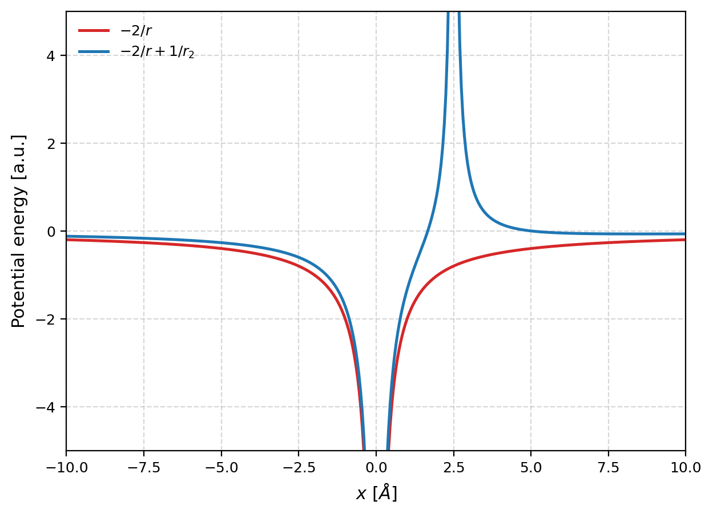
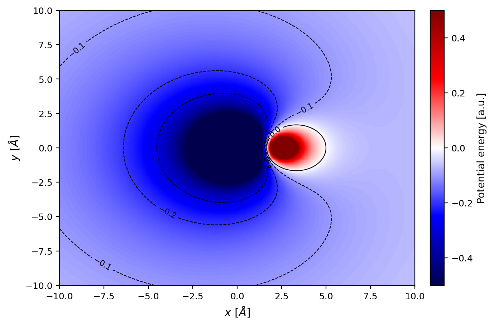

Quantum-mechanical visualization of electron–electron interaction effects.

One-dimensional slice of the effective potential experienced by one electron
as the second electron is fixed at varying radial distances.
Evolution of the effective potential as one electron moves towards the nucleus,
illustrating screening and correlation effects.

Two-dimensional slice of the effective potential experienced by one electron
as the second electron is fixed at varying radial distances.
Evolution of the effective potential as one electron moves towards the nucleus,
illustrating screening and correlation effects.